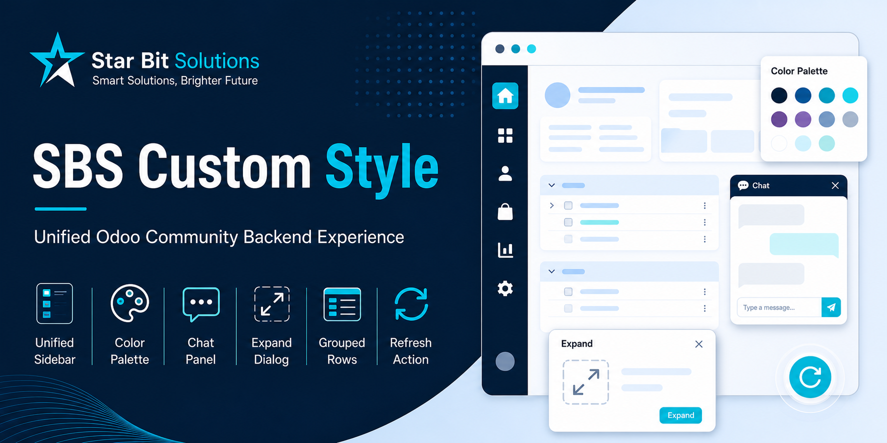
A backend theme for Odoo Community: a persistent apps sidebar, brandable light and dark palettes, a themed login page, and per-user control over the sidebar, the chatter and dialog size — plus expand and collapse for grouped lists and a push-refresh for open views.
ODOO 19 COMMUNITY ONLY PER-USER CHOICES LIGHT & DARK
Odoo Community's backend is perfectly serviceable and completely anonymous. Every app is a trip through the apps grid, every customer's system looks like every other customer's system, and the layout is the same whether someone works on a laptop or a wide monitor. This module addresses those together rather than as six separate add-ons.
Every app the user can reach, always down the left edge. Large with labels, small as icons, or hidden entirely.
Brand, primary, info, success, warning and danger, set separately for light and dark mode, with a one-click reset.
A flat colour or an uploaded image behind the login form, plus your own sidebar logo and favicon.
Beside the form on a wide screen, or below it when the form needs the width. Each user chooses.
Wizards and pop-ups can open maximised, which matters for report filters and long line editors.
Expand or collapse every group at once, refresh the current view, or push a reload to everyone.
Every application the user is allowed to see, always one click away. Large shows icons with names, Small collapses to icons for people who know where things are, and Invisible returns the full width to the record for anyone who prefers the stock layout. It is a per-user choice, not a company-wide decision.
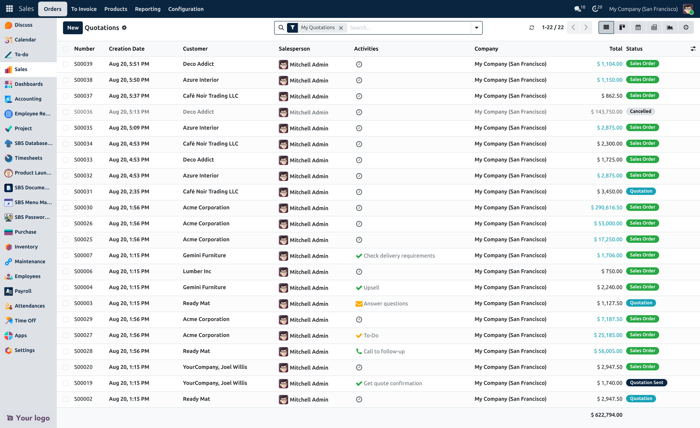
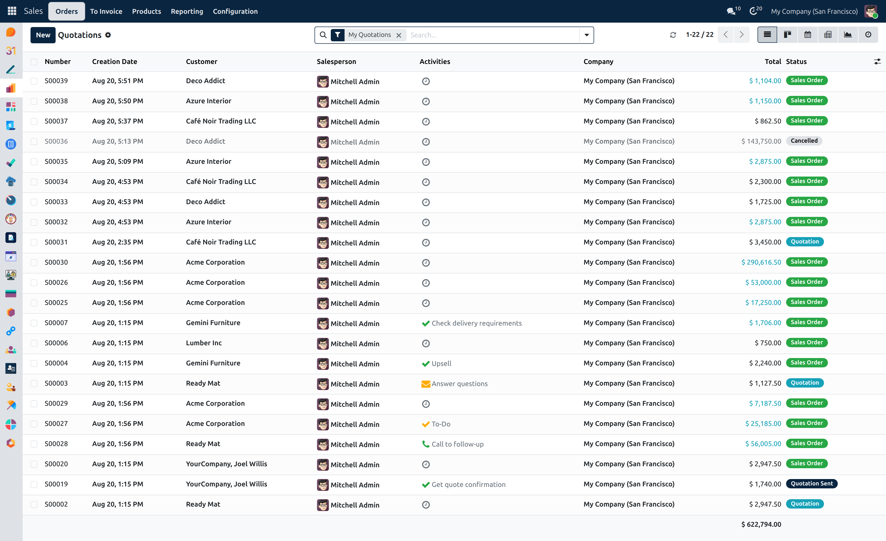
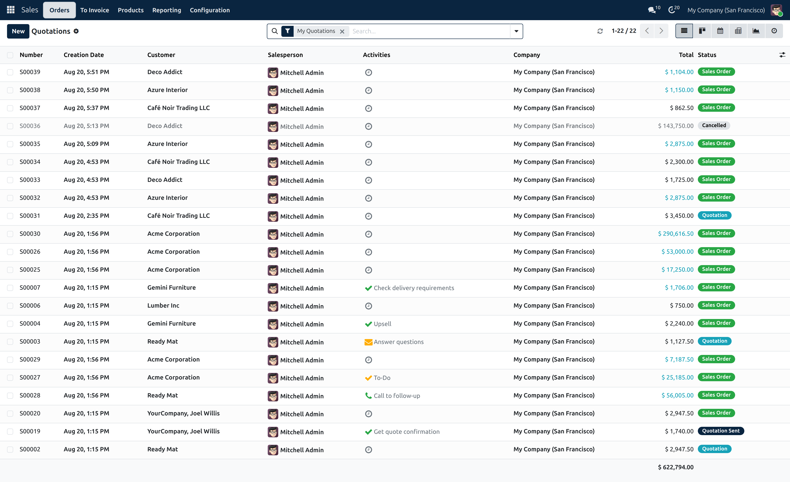
Large · Small · Invisible
On a wide screen the chatter beside the record is convenient. On a dense form — an order with many columns, a wizard with a wide table — that same panel is stealing the width the record needs. Moving it below gives the form the whole screen without losing the history.
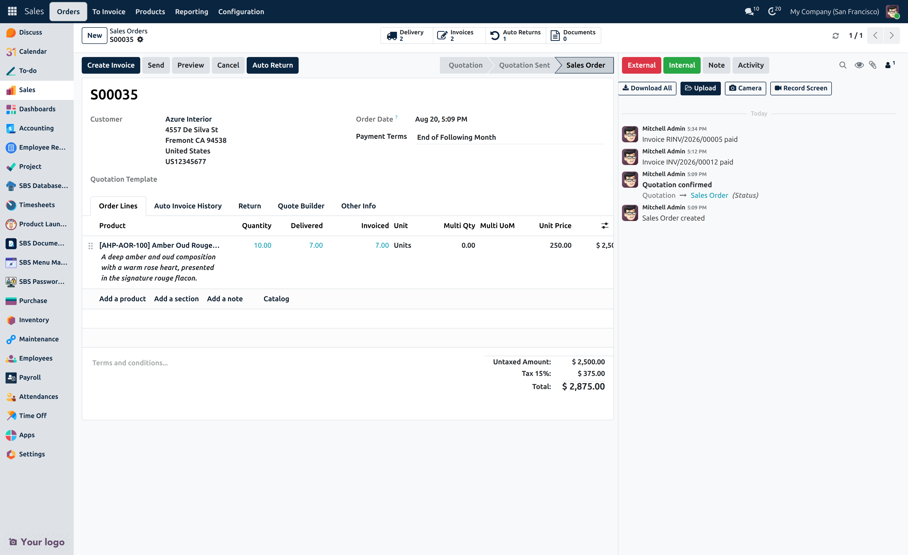
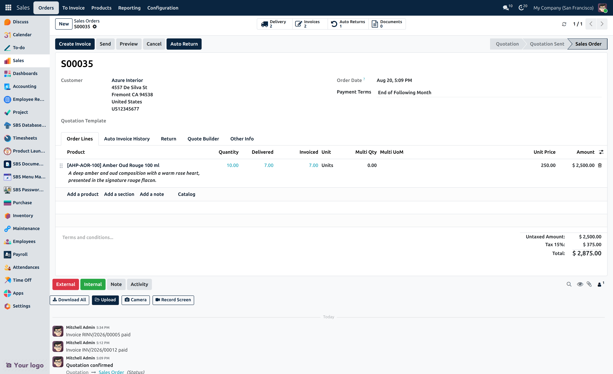
Odoo's dialogs are deliberately compact. That is fine for a confirmation and frustrating for a report wizard with a dozen filters or an editable line table. Setting dialogs to maximise gives them the room without changing anything about how they work.
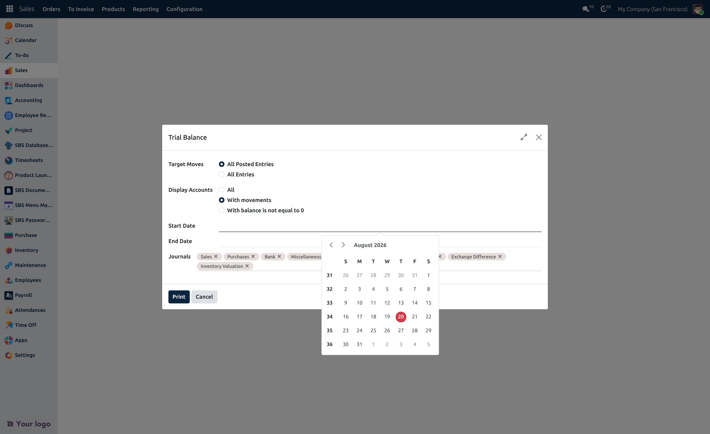
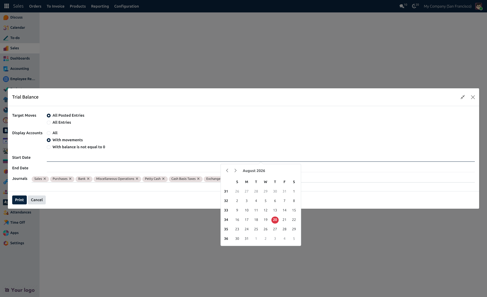
Sidebar type, chatter position and dialog size sit in Preferences, alongside language and notifications. Nobody has to file a request to have their own screen laid out the way they work.
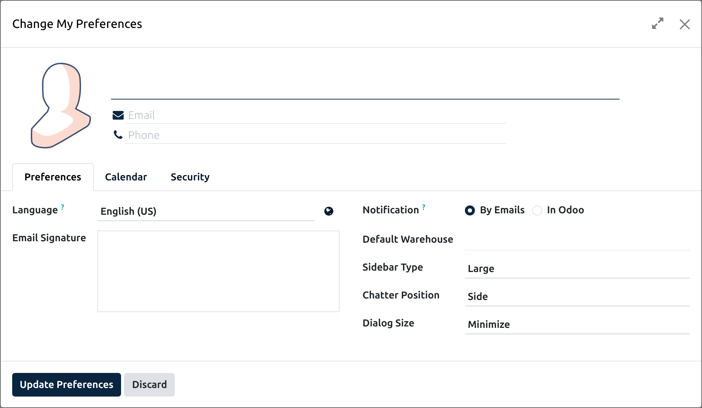
One settings block holds the lot: six semantic colours for light mode and the same six again for dark mode, the sidebar and apps-menu colours, the apps-menu background, your sidebar logo and favicon, and the login background. Each colour group has its own reset, so experimenting is safe.
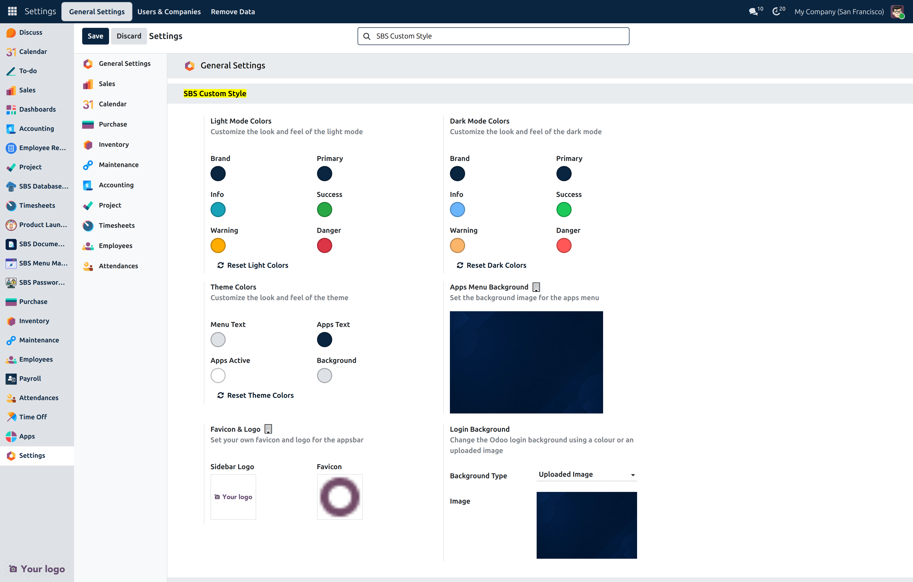
The login page takes a flat colour or an uploaded image, so the first screen of the day already belongs to your organisation rather than to a default install.
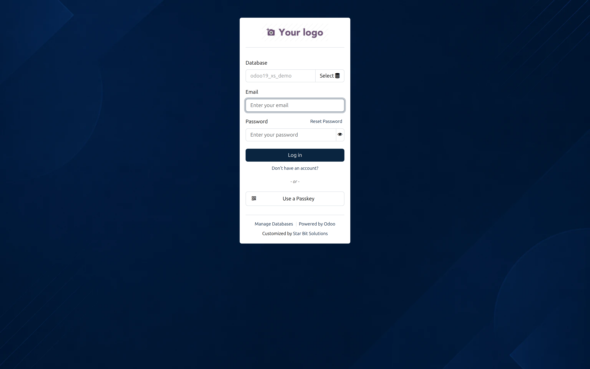
A ledger grouped by account, a pipeline grouped by stage — clicking each group open in turn is tedious. Expand All and Collapse All appear in the list's action menu whenever a grouping is active.
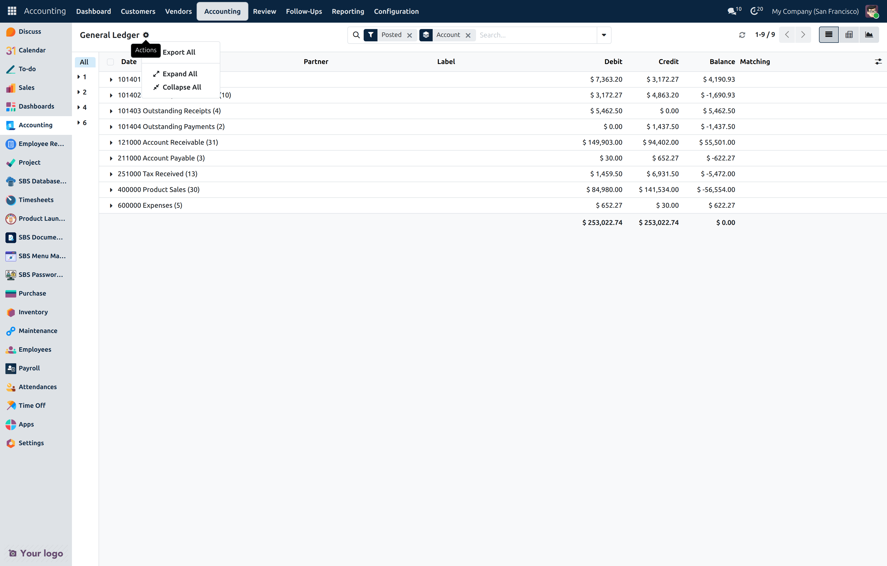
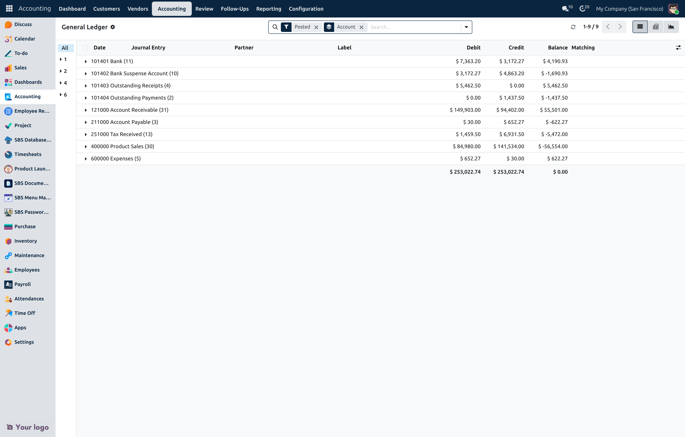
A refresh control in the control panel reloads the current view without a full browser reload. More usefully, the module adds a Reload Views server action type: run it from an automation and every user with that model open sees fresh data, without anyone telling them to press F5.
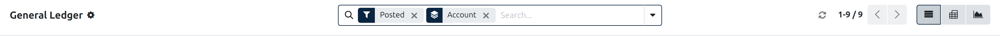
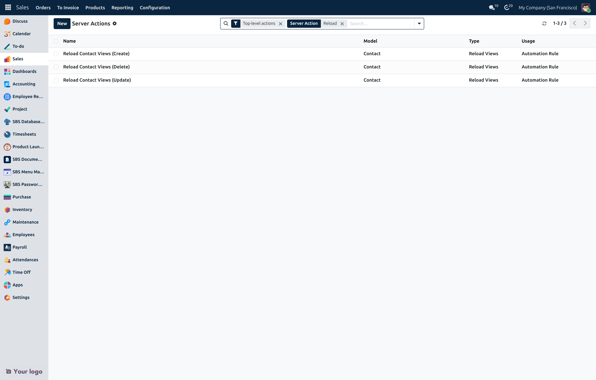
A Reload Views action can be limited to particular view types, so you can push a refresh to list and kanban views without disturbing someone mid-edit on a form.
| Odoo version | Odoo 19. Tested on Odoo 19 Community Edition. |
| Community only | Cannot be installed on Odoo Enterprise. The module excludes web_enterprise, which is always present on Enterprise, because it provides the Community equivalent of that backend styling. |
| Depends on | base_setup, web, mail, bus, base_automation |
| Live refresh | Push refresh uses Odoo's bus, so longpolling must be working as it does for chat notifications. |
| Translations | German, Spanish, French and Italian are supplied. |
| License | LGPL-3 |
SBS Custom Style · Version 19.0.1.1.0 · Star Bit Solutions